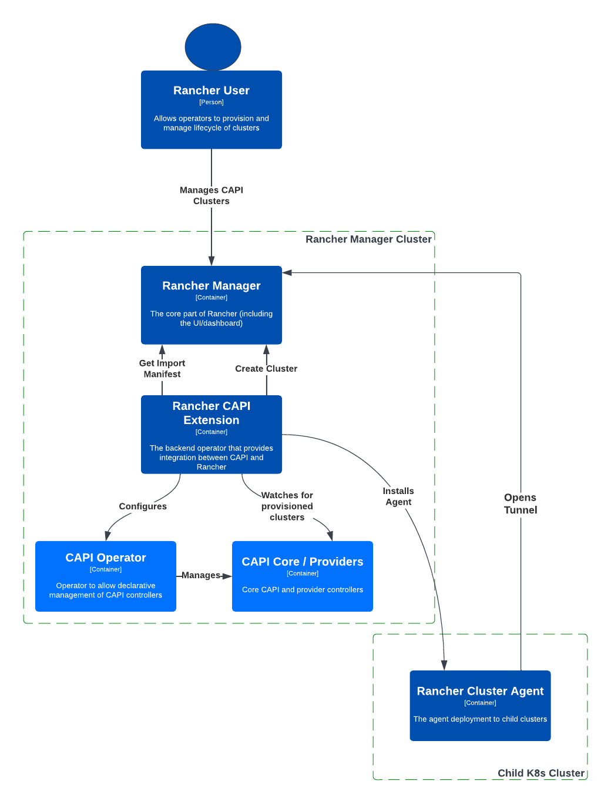

Architecture
This guide offers a comprehensive overview of the core components and structure that power SUSE® Rancher Prime Cluster API and its integration within the Rancher ecosystem.
A Rancher User will use Rancher to manage clusters. Rancher will be able to use Cluster API to manage the lifecycle of child Kubernetes clusters.

Components
Below is a visual representation of the architecture components of Rancher Turtles. This diagram illustrates the key elements and their relationships within the SUSE® Rancher Prime Cluster API system. Understanding these components is essential for gaining insights into how Rancher leverages Cluster API (CAPI) for cluster management.

Rancher Manager
This is the core component of Rancher and users can leverage the existing Explorer feature in the dashboard to access cluster workload details.
Rancher Cluster Agent
The agent is deployed within child clusters, enabling Rancher to import and establish a connection with these clusters. This connection allows Rancher to manage the child clusters effectively from within its platform.
SUSE® Rancher Prime Cluster API - Rancher CAPI Extension
It provides integration between CAPI and Rancher while currently supporting the following functionalities:
-
Importing CAPI clusters into Rancher: installing Rancher Cluster Agent in CAPI provisioned clusters.
-
CAPI Operator Configuration: Configuration support for the CAPI Operator.
Deployment Topology
Rancher Manager & CAPI Management Combined
This is the only topology currently supported, where both Rancher Manager and SUSE® Rancher Prime Cluster API are deployed to the same Kubernetes cluster, and it acts as a centralized management cluster.
This architecture offers a simplified deployment of components and provides a single view of all clusters. On the flip side, it’s important to consider that the number of clusters that can be managed effectively by Cluster API (CAPI) is limited by the resources available within the single management cluster.